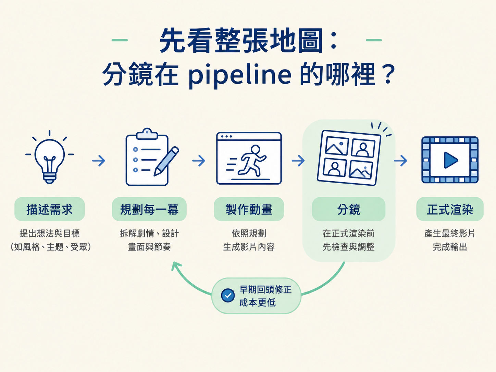
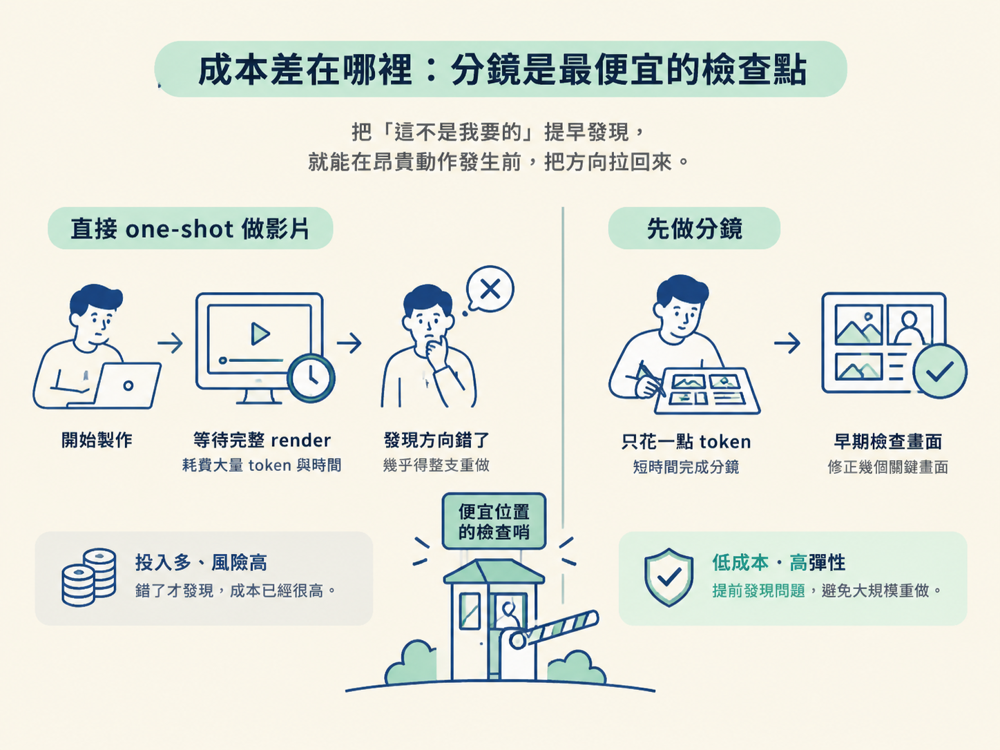
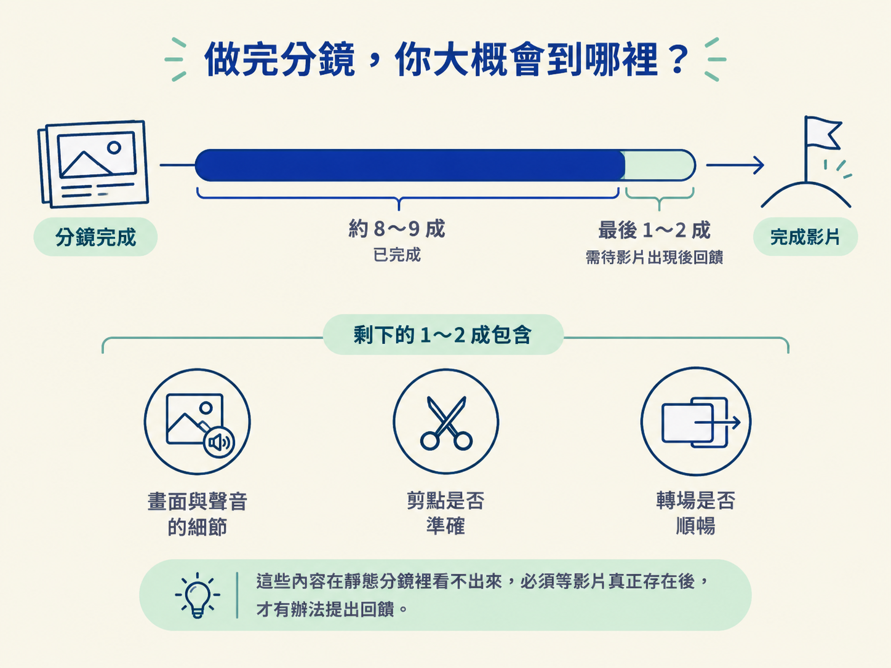

一支影片從想法到成品，中間會經過「描述需求、規劃每一幕、製作動畫、正式渲染」等階段。分鏡就位在正式渲染之前，像是施工前先攤開設計圖：你還沒開始砌牆，就能先確認房間的位置對不對。
這個順序很重要，因為第一個 prompt 通常不夠精確。先做分鏡，能讓你在影片還沒動起來、額度還沒大量用掉之前，先看見 agent 打算怎麼做，並把修正提前到流程大約前三分之一的位置。

學完這一課，你應該能說明為什麼要在 render 前先做分鏡：第一個 prompt 通常不夠精確，先分鏡能把「發現方向錯了」的成本壓到最低，並把修正拉到大約前三分之一的位置。
想像你坐在電腦前，送出一句自己覺得寫得不錯的 prompt：「幫我做一支 15 秒的動態圖像影片，介紹我的產品。」接著，你放心地去做別的事。
半小時後，agent 告訴你影片完成了。你點開一看，動作很流暢、轉場很炫，卻完全不是你腦中想要的樣子：標題的重點放錯了，其中一幕根本不該出現，而你真正想強調的畫面只停留了短短半秒。
這時候，你通常只剩兩個選擇：整支影片重做，或是勉強接受一個方向不對的成品。
問題往往不在 agent 不夠強，而在於你太晚才看見它打算做什麼。它已經一路把動畫做完、把額度用完，你才第一次看到結果。這一課要談的，就是如何把這個「第一次看到」提前，而且提前到一個代價很低的位置。
分鏡（storyboard）的做法很樸素：在畫面開始動之前，先把每一幕做成靜態畫面，再加上一句話，說明這一幕接下來會發生什麼事。
它像是一疊還沒拍攝的草圖，也像施工前先拿給你確認的示意圖。你不用等整棟房子蓋完，才發現廚房蓋到了客廳的位置。
分鏡的關鍵就在「還沒動」。每一幕都停在靜止狀態，不會有鏡頭甩動，不會有元素滑入，也沒有音樂。你先看的，是構圖、文字、版面，以及一段描述，說明這一幕之後會怎麼動。
它可以只是幾張圖排在一起，也可以是一個直接在瀏覽器打開的網頁。後面你會看到，用 HTML 做成一頁式分鏡通常最好用，因為它製作速度快、可以點選，也能直接在畫面上留下意見。
很多人會想：「那我把 prompt 寫詳細一點不就好了？為什麼還要多做一輪分鏡？」這正是分鏡要解決的誤解。
對多數影片來說，第一個 prompt 幾乎不可能詳細到一次命中。影片是許多決定疊在一起的結果：場景要怎麼排序、每一幕停留多久、鏡頭如何移動、文字放在哪裡、字體多大，以及什麼時候換場。
這些決定在你腦中可能還是一團模糊的感覺。一旦把 prompt 交出去，模型就必須替你猜。如果其中一個關鍵地方猜錯，後面的內容往往會一起偏掉。
模型會把那個方向當成正確答案，繼續往下製作。最後，你拿到的可能是一支「動畫都做好了、額度也花完了，但方向不對」的影片。接著，你得花力氣整支打掉重來，或是在錯誤的骨架上不斷修補。不管選哪一種，都比一開始先看一眼分鏡昂貴得多。
把兩條路並排比較，差異就很清楚：
| 直接 one-shot 做影片 | 先分鏡，再做影片 | |
|---|---|---|
| 你多早看到結果 | 通常要等整個流程快結束、影片做完才看得到 | 畫面還沒動，就能在流程大約前三分之一時看見方向 |
| 等待成本 | 完整 render 的時間 | 製作靜態頁面的時間，短很多 |
| 花掉的額度 | 完整 render 的用量 | 只製作靜態畫面，用量很少 |
| 發現方向錯了 | 幾乎要整支影片重做 | 修改幾個畫面，再重新產出一份分鏡 |
分鏡真正的價值，是把「這不是我要的」提早到昂貴動作發生之前。你還沒 render，還沒把整支影片算完，只花了一點 token 和一輪很短的時間，就能把方向拉回來。

換句話說，分鏡是一座放在便宜位置的檢查哨。它不負責生產最終畫面，只讓你在成本最低的時刻，決定這個方向要不要放行。
要讓分鏡真的有用，需要同時具備兩件事。
第一，你要拿得到每一幕的靜態畫面，以及這個畫面接下來會怎麼動的描述。只有圖片，你只能評論構圖；只有文字描述，你又無法想像畫面實際長什麼樣子。靜態畫面和動態描述放在一起，才是一份完整的「它打算做什麼」。
第二，你要有一個可以回饋的管道。直接在聊天視窗裡用文字說明當然也可以，但如果能在畫面上直接點選某個位置留下意見，效果會好很多。
這樣的意見會自動帶著更多上下文：它屬於第幾幕、發生在第幾秒，以及位於畫面的哪個位置。模型收到的就不再是一句模糊的「這裡怪怪的」，而是一個精確到可以直接動手修改的指令。這會是下一課的重點。
對分鏡要有合理的期待。它不會直接交給你一支完成品，但會把你帶到一個很前面、也很關鍵的位置。
常見的情況是：你先在分鏡上留下意見，再請 agent 照著修正並做出影片。這樣的成品通常已經達到你心目中大約八到九成的水準。
剩下的一到兩成，通常是畫面與聲音的細節、剪點是否準確，以及某個轉場是否順暢。這些內容在靜態分鏡裡本來就看不出來，必須等影片真正存在之後，才有辦法提出回饋。

所以，分鏡不是終點。它的工作，是把你推進到「距離完成只差臨門一腳」的位置；那一腳會是後面另一個節點的主題。
就算你已經有一套設計系統，光靠一次 one-shot 通常也只能做到差不多。分鏡並沒有多出一個沒必要的步驟，它把力氣放在最能改變結果的地方。
分鏡是介於「一句話 one-shot」和「正式渲染」之間的便宜檢查點。它在畫面還沒動之前，把每一幕的靜態畫面和動態描述攤開來給你看，讓你在額度還沒燒掉、render 還沒發生時就能修正方向，把發現錯誤的成本壓到最低。有效的分鏡需要兩件事：拿得到靜態畫面加描述，以及一個能留下精確意見的回饋管道。跑完分鏡再出影片，通常能把你帶到目標的八成到九成。
因此，分鏡的角色可以這樣記：它不算成品，也不只是草稿，就是正式渲染前的一道低成本決策關卡。先把「它打算做什麼」看清楚，再決定要不要讓它真正動起來。
下一步，就要把這個檢查關卡拆開來看：一份好的分鏡頁面上，究竟會出現哪些欄位？我們會逐一認出影片描述、場景數、總時長、逐場景秒數，以及每一幕的靜態畫面和文案預覽。